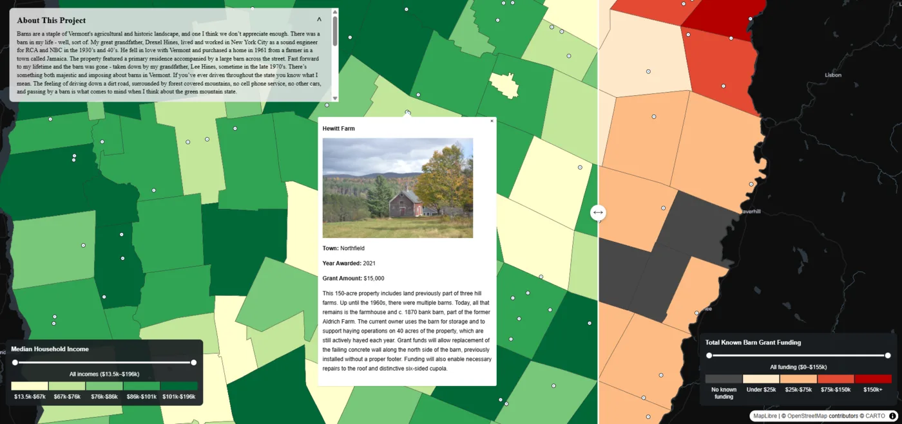

Vermont Historic Barn Grants Analysis

This Project Demonstrates
- MapLibre GL JS - PMTiles - Static Hosting - JavaScript - HTML - CSS - Python
A selection of projects over the years.

This Project Demonstrates
- MapLibre GL JS - PMTiles - Static Hosting - JavaScript - HTML - CSS - Python